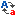

D e r E d i t o r
Link - Überprüfung
Die Link - Überprüfung sucht nach Verweisen auf Dateien wie zum Beispiel » Grafiken, » Multimedia - Objekten und anderen Dokumenten. Links auf externe Seiten im Internet können wahlweise auch getestet werden.
| Icons | |
| Die Datei wurde gefunden. | |
|  | Der Link wurde zwar richtig gesetzt, die Grofl/Kleinschreibung stimmt aber nicht. Das kann auf manchen Servern zu Problemen führen. |
| Die Datei oder der Ordner existiert nicht. | |